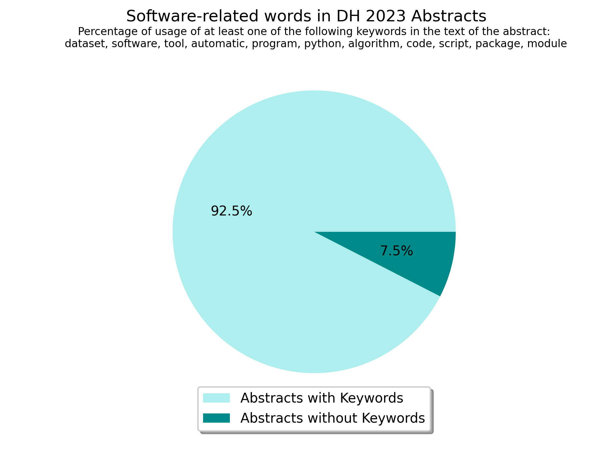
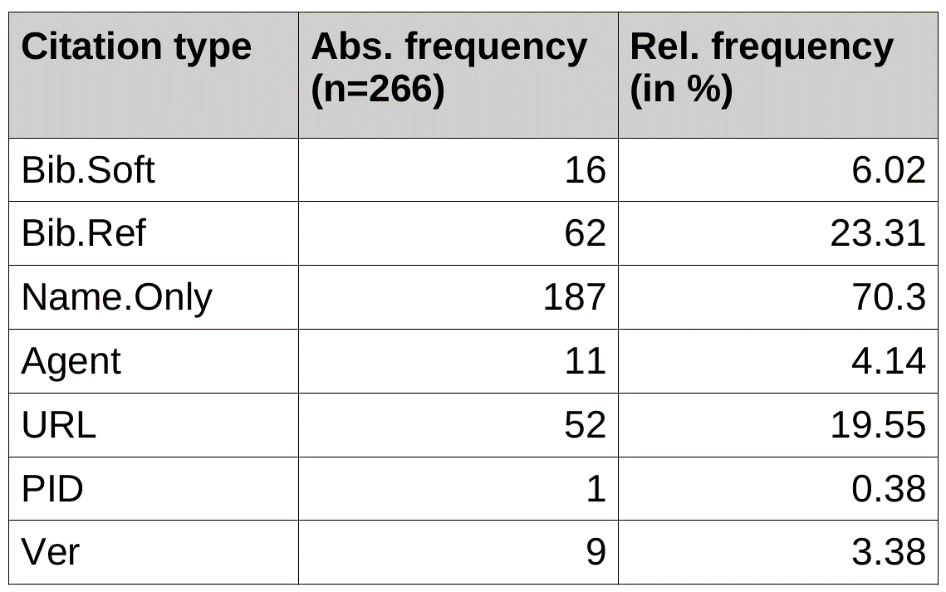
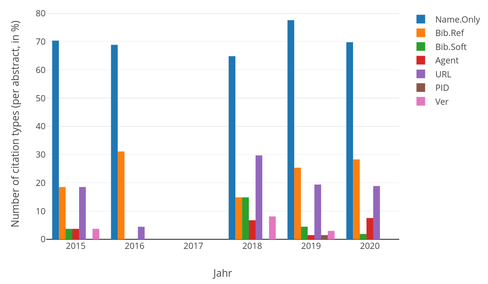

Software Citation in the
Digital Humanities
Daniel Jettka (University of Paderborn), Ulrike Henny-Krahmer (University of Rostock),
Anne Ferger (University of Paderborn), Fernanda Alvares Freire (University of Rostock)
DH2023
July 14, 2023
Slides at: https://hennyu.github.io/dh_23/
Overview
- Software in the Digital Humanities
- Software Citation Principles
- Corpus and Annotation Criteria
- Annotation, Analysis and Results
- Conclusions and Considerations on Further Steps
1. Software in the Digital Humanities
Software plays a central role in Digital Humanities
|
Computational analysis of large data sets, computer-based simulations, and software technology in general play a central role for virtually all scientific breakthroughs of at least the 21st century. |
How relevant is software at DH 2023?
We understand research software as...
... software used in research to generate, process, analyze, link, or present research data. (Jettka and Henny-Krahmer 2022, |
broad scope: - both software developed in research contexts - and software developed elsewhere and used in research |
Why is it important to properly cite software?
- Guarantee transparency
- Enable reproducibility
- Give proper credit to developers
- Maintain stable reference (for example, to a particular version)
Our goal today is to...
- review the practice of software citation in the DH
- raise awareness and promote adequate identification, acknowledgement, and tracking of software as a scholarly tool and output
2. Software Citation Principles
Recommendations for software citation
When to cite software?
"did the software play a critical part in my research?" or "did the software provide something novel?"
(Jackson n.d.)
Recommendations for software citation
What type of recommendations do exist?
- Research and guides on software citation, in particular
(e. g. Jackson n.d., Smith et al. 2016, Chue Hong et al. 2019a, 2019b, Druskat 2021a, 2021b) - Recommendations as part of general guides of sustainable software development
(e. g. Anzt et al. 2021, Jettka/Henny-Krahmer 2022) - Recommendations from general citation styles
(e. g. MLA or APA) - Recommendations made by software developers themselves for their software
Six principles for citing research software: (Smith et al. 2016)
- Importance (legitimate and citable product of research)
- Credit and Attribution (scholarly credit and recognition)
- Unique Identification (machine actionable, recognized by the community)
- Persistence (stable id. and metadata)
- Accessibility (metadata, documentation - informed use of the referenced software)
- Specificity (specific version)
3. Corpus and Annotation Criteria
Our goals
- Review the practice of software citation in the DH:
- through an analysis based on DH conference abstracts
- with an annotation model developed from existing software citation recommendations
- Preliminary work:
Henny-Krahmer/Jettka 2021, 2022 (using DHd conference abstracts)
Question
How is software cited? Which information is given or omitted?
Corpus
- volumes of DH conference abstracts from 2015–2020 in TEI format (not used: 2017)
- randomly selected 156 abstracts for manual annotation
- all languages (English, Spanish, French, German, Italian, Portuguese) and all relevant years included
Characteristics of our criteria
- In line with software citation principles
- Modelled as TEI Taxonomy
- Available on Github (Jettka et al. 2022):
https://github.com/DH-RSE/software-citation
Annotation criteria
| Label | Description |
|---|---|
| Bib.Soft | A Bibliographic entry for the software itself |
| Bib.Ref | A Bibliographic entry for a reference publication about the software, e.g. a journal article, book or user manual |
| Name.Only | Only the name of the software is mentioned |
| Agent | The developers or responsible persons are named |
| URL | The citation contains a URL that points to the software itself |
| PID | The citation contains a persistent identifier (PID) for the software itself |
| Ver | The citation includes an indication of a specific software version |
4. Annotation, Analysis and Results
Annotation
- manually created software list + ToolXtractor (Barbot et al. 2019; 2021) to find potential software citations
- manual post-processing
Annotation example
<p>Por otro lado, los índices fueron generados por el complemento '<rs type="software" key="Omeka_Reference" ana="#Agent #Ver #URL #Bib.Soft">Reference</rs>', desarrollada para <rs type="software" key="Omeka" ana="#Name.Only">Omeka</rs> por Daniel Bertherau. [...]</p>
[...]
Bertherau, D. (s.f.). “Reference 2.4.2”. Github. https://github.com/Daniel-KM/Reference.
(Source: Cid Carmona / Gutiérrez de la Torre / Acosta Samperio 2018)
What to annotate — what not?
Some considerations:
- any type of computer program, including desktop and web applications, server software, plugins, extensions and sets of scripts.
- tagging of concrete mentions and references to software in the main text
- programming languages, if directly connected to the software developed in a project
Software index
- cited software was collected in a central index of software names
- currently 181 entries
Software index
<list> <item xml:id="MediaWiki"> <name>MediaWiki</name> <ref type="URL">https://www.mediawiki.org</ref> <note type="description">a collaboration and documentation platform</note> <note type="category">general</note> </item> <item xml:id="PoetryLab"> <name>PoetryLab</name> <ref type="URL">https://github.com/linhd-postdata/poetrylab</ref> <note type="description">an extensible open source toolkit for syllabification, scansion (extraction of stress patterns), enjambment detection (syntactical units split in two lines), rhyme detection, and historical named entity recognition for Spanish poetry</note> <note type="category">research</note> </item> <item xml:id="Navarro-Colorado_2017"> <name>?</name> <ref type="DOI">https://doi.org/10.1093/llc/fqx009</ref> <note type="description">A metrical scansion system for fixed-metre Spanish poetry.</note> <note type="category">research</note> </item> </list>
Analysis
Analysis
5. Conclusions and Considerations on Further Steps
Conclusions
Need for improvement of software citation practice in DH.
Need for action:
- users
- developers and operators
- publishers
Recommendations
for developers:
- publish your software
- name your software
- create citation suggestion (e.g., CFF file)
- create persistent identifier(s) (e.g., on Zenodo)
Recommendations
for users:
- use bibliographic entries for research software itself
- name responsible persons and institutions
- be specific where meaningful: versions / modules / ...
- use persistent identifiers
Recommendations
For example:
Lundberg, Sigfrid / Geertinger, Axel / Stadler, Peter / Siam, Omar / Jettka, Daniel / Wawilow, Anastasia / Richts-Matthaei, Kristina (2023):
“MerMEId.” Version 2.0.0-alpha.10. [Computer software]. <https://github.com/Edirom/MerMEId/releases/tag/2.0.0-alpha.10>
(Submission Guidelines for DH2024?)
Recommendations
Pattern:
Developer(s) (Year): “Software name.” Version X.X. [Computer software]. DOI: XXX.
(if there is no PI: <URL>)
Outlook and Further Steps
For continuing the software citation study:
- Annotate DH journal articles
- Revise annotation model
(see upcoming contribution to TEI-MEC conference!) - Calculate inter-annotator agreement
- Use data to train model for recognition of software citations
Thank you very much!
Slides at: https://hennyu.github.io/dh_23/
References
- Anzt, Hartwig / Bach, Felix / Druskat, Stephan / Löffler, Frank / Loewe, Axel / Renard, Bernhard Y. / Seemann, Gunnar / Struck, Alexander et al. (2021): “An environment for sustainable research 5 software in Germany and beyond: current state, open challenges, and call for action [version 2; peer review: 2 approved].” F1000Research 9:295. https://doi.org/10.12688/f1000research.23224.2.
- Barbot, Laure / Fischer, Frank / Moranville, Yoann / Pozdniakov, Ivan (2019). “Which DH Tools Are Actually Used in Research?” weltliteratur.net. A Black Market for the Digital Humanities. https://weltliteratur.net/dh-tools-used-in-research/ [last accessed: 17.04.2023].
- Barbot, Laure / Fischer, Frank / Moranville, Yoann (2021). “ToolXtractor.” GitHub.com. https://github.com/lehkost/ToolXtractor [last accessed: 17.04.2023].
- Cid Carmona, Victor Julián / Gutiérrez de la Torre, Silvia / Acosta Samperio, Guadelupe Elisa Cihuaxty (2018). “Indagando La Cultura Impresa Del Siglo XVIII Novohispano: Una Base De Datos Inédita.” DH2018. Book of Abstracts. https://dh2018.adho.org/indagando-la-cultura-impresa-del-siglo-xviii-novohispano-una-base-de-datos-inedita/.
- Chue Hong, Neil (ed.) (2019a): “Software Citation Checklist for Authors” (Version 0.9.0). Zenodo. http://doi.org/10.5281/zenodo.3479199.
- Chue Hong, Neil (ed.) (2019b): "Software Citation Checklist for Developers" (Version 0.9.0). Zenodo. http://doi.org/10.5281/zenodo.3482769.
- Druskat, Stephan (2021a): “Research software citation for researchers.” Research Software Citation. Cite and Make Citable! (Version 1.1). https://cite.research-software.org/researchers/ [last accessed: 04.11.2022].
- Druskat, Stephan (2021b): “Research software citation for developers.” Research Software Citation. Cite and Make Citable! (Version 1.1). https://cite.research-software.org/developers/ [last accessed: 04.11.2022].
- Henny-Krahmer, Ulrike / Jettka, Daniel (2022): “Softwarezitation als Technik der Wissenschaftskultur. Vom Umgang mit Forschungssoftware in den Digital Humanities.” In: DHd2022. Konferenzabstracts. https://doi.org/10.5281/zenodo.6328046.
- Jettka, Daniel / Henny-Krahmer, Ulrike (2022): “Leitfaden für die nachhaltige Entwicklung und Nutzung von Forschungssoftware.” NFDI4Culture Handreichung (Version 1.0.0). https://docs.nfdi4culture.de/ta3-sustainable-research-software [last accessed: 04.11.2022]. https://doi.org/10.5281/zenodo.7194401.
- Jettka, Daniel / Henny-Krahmer, Ulrike / Ferger, Anne / Alvares Freire, Fernanda (2022): “Software citation in the Digital Humanities.” (Version 0.1) GitHub.com. https://github.com/DH-RSE/software-citation [last accessed: 04.11.2022].
- Jackson, Mike (n. d.): “How to cite and describe software.” In: Software and research: The Software Sustainability Institute’s Blog. https://www.software.ac.uk/how-cite-and-describe-software [last accessed: 04.11.2021].